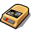

Registratore di Suoni
| Deskbar: | ||
| Percorso: | /boot/system/apps/SoundRecorder | |
| Impostazioni: | ~/config/settings/??? |
La documentazione di questa applicazione è ancora mancante. Se vuoi occupartene, comunicalo sulla mailing list della documentatione per evitare inutili duplicazioni.